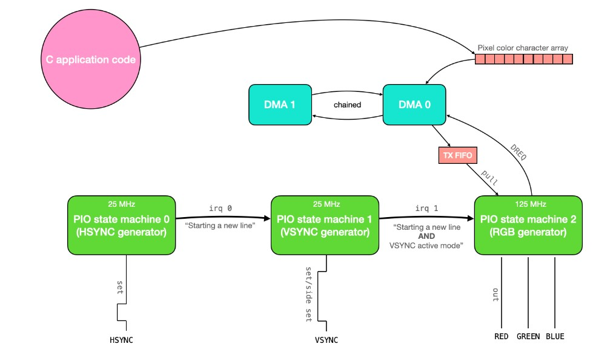
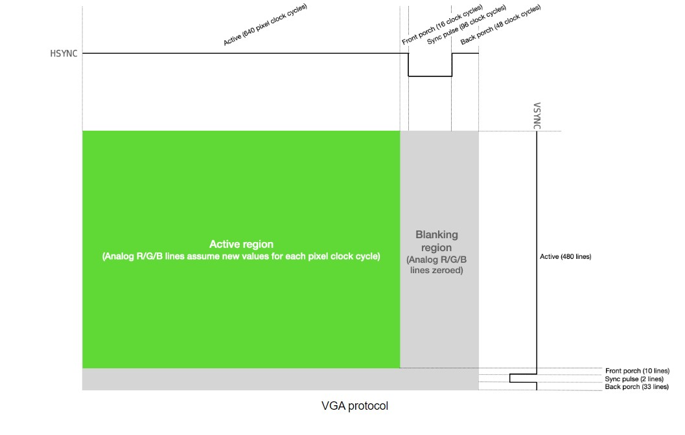
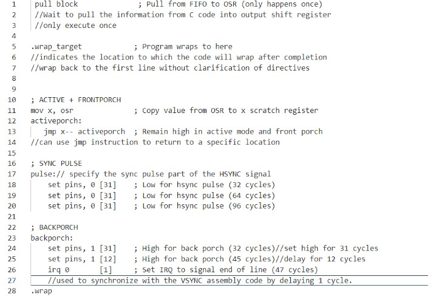
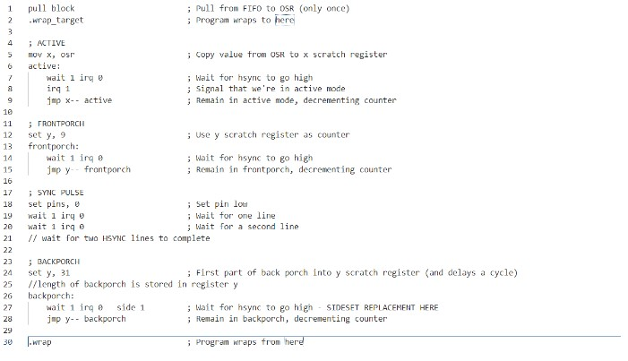
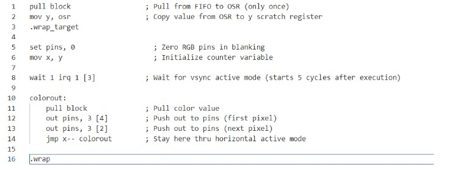
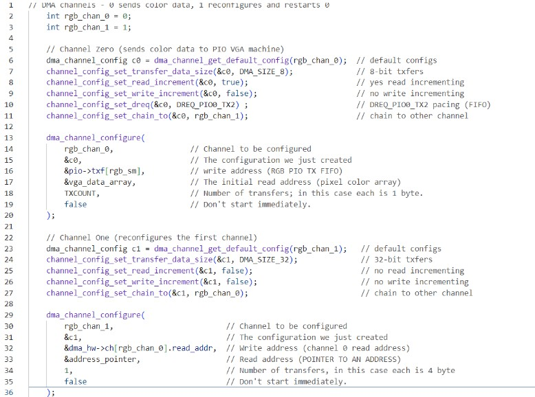

Before we dive into our PIO explanation lets understand why PIO is great.
Introduction to RP2040 PIO and why it is important?
The programmable input/output block (PIO) is a versatile hardware interface, which can be programmed in the same way as a processor. It can support a variety of IO standards, including:
- 8080 and 6800 parallel bus
- I2C
- 3-pin I2S
- SDIO
- SPI, DSPI, QSPI
- UART
- DPI or VGA (via resistor DAC)
In RP2040, there are 2 identical PIO blocks. Each PIO block has a unique connection to the interrupt controller, GPIO, and bus fabric. And they all can independently execute sequential programs to manipulate GPIOs and transfer data.
PIO programs come from various sources: assembled directly by the user, drawn from the PIO library, or generated programmatically by user software. From this point on, state machines are generally autonomous, and system software interacts through DMA, interrupts and control registers, as with other peripherals on RP2040.
Why is it important?
Unlike a general-purpose processor, PIO state machines are highly specialized for IO, with a focus on determinism, precise timing, and close integration with fixed-function hardware. And the configuration and reconfiguration of the PIO state machines can be implemented dynamically for numerous different interfaces.
Also, PIO is of high performance as well as flexibility because of a carefully selected set of fixed-function hardware inside each state machine. When outputting DPI, PIO can sustain 360 Mbps during the active scanline period when running from a 48MHz system clock. And PIO provides a small but flexible set of primitives which allow system software to be more hands-on with state machine control flow for more complex interfaces.Moreover, The PIO is much more flexible when programmed directly, supporting a wide variety of interfaces which may not have been foreseen by its designers.
PIO in VGA(for our project)
Overall logic and explanation

This code uses three PIO state machines 0,1 and 2 on PIO instance 0(synchronized with one another via interrupts) to drive a VGA screen. The pixel data to draw on the screen is communicated to the PIO state machines through a DMA channel. And it uses 2 DMA channels (one to communicate data to the PIO system, and the other to reconfigure and restart the first). Only 3 bits are used to store color data for each pixel, which means that there are only 8 colors which can be drawn to the screen. Because only 3 bits are used to represent the color in each pixel, each character in the character array stores the data for 2 pixels (and 2 of the 8 bits are wasted). This gives a total memory usage of 1.536 kBytes.

Driving a VGA screen requires manipulating two digital synchronization pins and three analog color pins (RGB). One of the synchronization pins,HSYNC , tells the screen when to move to a new row of pixels. The other synchronization pin,VSYNC, tells the screen when to start a new frame. The protocol is described below, both textually and visually.
- The VGA pixel clock runs at 25MHz
- Both HSYNCand VSYNC start in logic level high
- HSYNC remains in active mode for 640 pixel clock cycles
- For each of the 640 clock cycles, the voltages on the RGB lines are varied between 0 and 0.7V, with each voltage representing the intensity of that particular color for a particular pixel.
- After 640 clock cycles, the RGB lines are set to 0, and the HSYNC line remains high through its front porch (16 pixel clock cycles).
- HSYNC is set to logic-level low for 96 pixel clock cycles (the horizontal sync pulse)
- HSYNC is set to logic-level high through its back porch (48 pixel clock cycles).
- HSYNC then returns to the start of active mode, and the process is repeated for the next row of pixels. Each row of pixels is a line.
- VSYNC remains in active mode (logic level high) for 480 lines.
- VSYNC is set to logic-level low for 2 lines (this is the vertical sync pulse).
- VSYNC is set to logic-level high through its back porch (33 lines).
- VSYNC then returns to the start of active mode, and the process is repeated for the next frame.
Code + Explanation
Generating HSYNC

Generating VSYNC

Generating RGB Signal
initialization of counting registers, it zeroes the color pins until it receives the signal from the VSYNC state machine that a newline has been started and VSYNC is in active mode. When this condition is met, the RGB machine knows that it should clock out 640 pixels. It does so by doing a pull from the TX FIFO, putting the first 3 bits out to the RGB pins, waiting the appropriate number of cycles, putting the next 3 bits out, waiting the appropriate number of cycles, then jumping back and doing it again until it completes the row. Once the row is complete, it zeroes the outputs and waits again for the signal from the VSYNC machine. And this state machine runs at 125 MHz.

Using DMA to communicate with Pixel data:
There exists a global character array called vga_data_array which is of length TXCOUNT (153600). Each character in this array contains the color information for two adjacent pixels. This color information is communicated, 8 bits at a time, to the RGB PIO state machine via a DMA channel. That DMA channel is paced by the DREQ_PIO0_TX2 data request signal (so that it only transfers when the PIO machine has emptied the FIFO), and it is restarted and reconfigured by a second DMA channel which is chained to the first. This second DMA channel writes a pointer to the start address of the first DMA channel to its read_address register.
